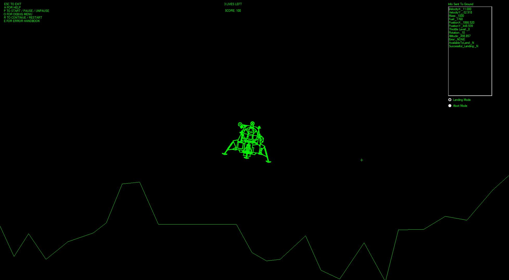

Foundational Work
Lunar Lander Game (1/21–5/21)
Created a physics-based lunar lander simulation in VB.net, applying fundamental principles of physics, graphics, and control systems.
High School Robotics (5/18–8/21)
Designed, built, and programmed a VEX competition robot, gaining hands-on experience in the engineering design process, automation, and CAD. Earned SolidWorks CSWA certification during this time.

Harvard Pre-College Data Visualization Class (5/18–8/21)
Learned python data visualization using Jupyter notebook, MatPlotLib, Pandas, etc.